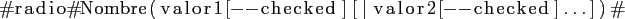
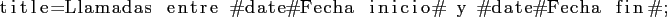

Next: Organización de menús e Up: Definición de plantillas y Previous: Definición de plantillas y Contents

Tan solo un valor puede estar marcado como ``checked'' (seleccionado).

Un parámetro puede repetirse para ser utilizado en diferentes partes del diseño de la plantilla. Por ejemplo, un rango de fechas podrÃa ser especificado con #date#Fecha inicio# y #date#Fecha fin# en ``title'' y ``where'' de la siguiente forma:
En Conditions:

En Format:

Tan solo se solicitarÃa una vez que el usuario rellenara dichos parámetros al hacer la consulta, usándose luego dicho valor en ambas apariciones en el diseño, es decir, se añadirÃan dichas fechas al tÃtulo y se usarÃan para las condiciones de consulta a la base de datos.